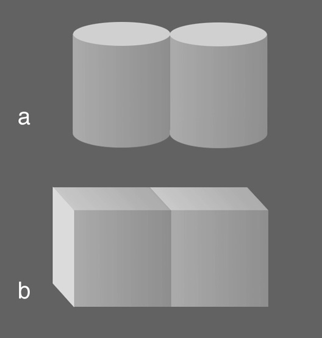
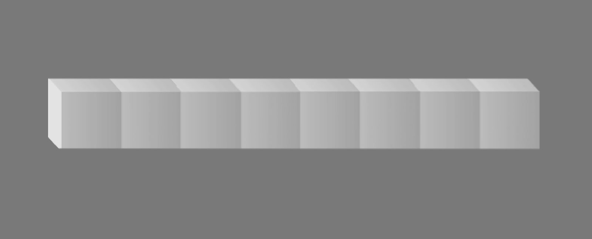

9.35 Illusion Laboratory
Spring 2023 Auditory Lab

Variations of the Craik O'Brien Cornsweet Effect
Our illusion was based on the Craik O'Brien Cornsweet Effect. In particular, we were inspired by the following illusion from Knill and Kerston’s paper:
In both images, the face of the shape has a luminance which subtly varies according to a gradient such that the left side of each square is darker than the right. However, the viewer does not perceive the gradient within the shapes, as their brain assumes the steady change in luminance is a result of varying illumination. When looking at image b, viewers perceive a sudden shift in lightness at the boundary of the two squares, which both appear to be solid colors. This is because the brain assumes that the sudden shift in luminance at the border of the squares must be due to a change in the surface's reflectance. However, in image a, the curved shapes appear to have the same lightness, because the brain assumes the shift in luminance at the border is a result of how light would reflect off of a curved surface.
We wanted to test how changing various parameters would change the effectiveness of the Craik O’Brien Cornsweet Effect. We wanted to know whether or not the effect would still work for several consecutive gradient cubes, or if it only worked with 2 adjacent objects. If the effect did hold, we also wanted to know if the cubes would seem progressively brighter from left to right, as this would imply that the illusion was the result of a higher order perceptual process capable of integrating information globally. To test these questions we constructed a stimulus below, made of several consecutive gradient cubes.
The next question we wanted to answer was if the illusion would persist for moving stimuli, so we constructed the following video, which contains an infinite number of gradient cubes moving constantly to the left.
Our considered hypotheses were that:
- Motion would break the illusion entirely.
- The rightmost square would always appear to be the lightest.
- If the viewer focused on a single square, it would remain the same brightness relative to the rest of the image.
 Next, we wanted to know whether or not the illusion would still work when the entire stimulus was curved (rather than the faces of each subunit in image a above). Having the color gradient of the cubes align with a curved object contradicts how the illumination would vary in an image in the presence of a single light source. Our hypothesis for this stimulus was that the brain would pick up on this discrepancy, causing viewers to perceive the illusion less strongly, if at all.
Next, we wanted to know whether or not the illusion would still work when the entire stimulus was curved (rather than the faces of each subunit in image a above). Having the color gradient of the cubes align with a curved object contradicts how the illumination would vary in an image in the presence of a single light source. Our hypothesis for this stimulus was that the brain would pick up on this discrepancy, causing viewers to perceive the illusion less strongly, if at all.
Our next stimulus was made to test the boundaries of the Craik O'Brien Cornsweet Effect. In order to do this, we constructed a circle made of gradient blocks. We hypothesized that this would either result in the perception that all of the blocks were the same lightness, or in a poly-stable interpretation, where different blocks alternate between appearing the darkest or the brightest (left).
Continuing with the idea of circular stimuli, we also recreated a circle of gradient blocks with a discontinuity in the middle. If the illusion works on this image but not the other circular stimulus, then it would suggest that it is the connectivity of the circle, rather than the curvature which prevents the perception of blocks with varying brightnesses (right).
Knill, D., Kersten, D. Apparent surface curvature affects lightness perception. Nature 351, 228–230 (1991). https://doi.org/10.1038/351228a0